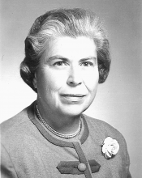

Please note: the AAS Obituaries are temporarily being hosted on this website while their full content is being ingested into the PubPub publishing platform newly adopted by the Bulletin of the American Astronomical Society. When the migration is complete, your existing links will take you to the final, migrated content. Contact peter.williams@aas.org with any questions.
Florence Shirley Patterson Jones (1913-2000)
Shirley Jones was born to William and Florence Patterson on 26 March 1913 in Newmarket, Ontario, Canada. From an early age she loved nature—woods, lakes, islands, and, of course, stars. She also loved to study. In 1931 she received the Carter Scholarship, First Rank, York County, Canada. Then at the University of Toronto in Ontario she studied mathematics and physics and took her BA with First Class Honors in 1935. That year she also received the Gold Medal of the Royal Astronomical Society of Canada.
Uncertain about her career path at that time, Shirley Patterson happened to visit Elephant Lake, between Haliburton and Bancroft. In the lake there was a small rocky three-acre island that she admired. With her spirit for adventure, she arranged to purchase it from the government for $75. It turned out to be a very good investment. Every summer of her life she returned to her little rustic island where she could birdwatch and stargaze in peace.
After she took ownership of her island, Shirley Patterson made up her mind to go to graduate school at the University of Toronto. She eagerly applied to the school of meteorology there. Her application was denied, however, because the program was open only to men at that time. Instead, she ended up spending the next year at the David Dunlap Observatory (DDO), where she wrote her master's thesis on "Stellar wavelengths from spectrographs of small dispersions."
After she received her MA from Toronto in 1936, Shirley Patterson spent the next two years working at DDO as a Research Associate. Her spirit for adventure, however, made her restless again. By 1938 she decided to move to Cambridge, Massachusetts, where she could pursue research at Harvard College Observatory. Like many bright young women who worked at HCO in those days, she turned her research papers into a doctoral thesis and received her PhD from Radcliffe College in 1941. Cecilia Payne-Gaposchkin was the advisor for her dissertation, broadly and simply entitled, "Surface photometry of external galaxies."
In 1941 Shirley Patterson returned to Toronto, where she worked during World War II at Research Enterprises Laboratory, a manufacturer of optical glass. She was responsible for quality control of the glass production. Donald Jones, who had hired her, fell in love with her. They were soon married and had two daughters: Lorella, born in 1943, and Irene, born in 1946. Shirley Jones stayed home for the next few years to care for her family, but in 1948, when her husband's career demanded that they travel, the Jones family moved to the United States and in time became US citizens.
With her husband traveling and her children going to school, Shirley Jones started developing her own career in a new direction. She became a lecturer on astronomy in local colleges. As the family moved, she taught undergraduates at the University of Buffalo, Wellesley College, Carnegie Institute of Technology, and Trinity College in Hartford, Connecticut. It was at Wellesley that I met her in the 1950s. She taught the "mathematical" section of Astronomy 101, which a small number of us took. She had a delightful sense of humor and knew just how to tell a good story—like the time that she had dutifully practiced counting seconds to observe a solar eclipse that ultimately was clouded out at the last minute. Her personal warmth made us forget how cold it was in the dome as we made required observations on wintry evenings. Perhaps because she had little career guidance in the 1930s, she made sure that we knew about summer assistantships at the Maria Mitchell Observatory on Nantucket Island, Massachusetts, and at the Royal Greenwich Observatory in England.
In summary, Shirley Jones was a fine role model for young women. She balanced her personal and professional lives very well. She always came to class dressed in beautiful suits for which she had woven the fabric herself. In retirement she moved from teaching astronomy to teaching weaving. She expanded her interest to hand weaving and exhibited her craft in New England and the Midwest. She eventually earned one of the craft's highest degrees: the designation of a "master weaver." In addition to her membership in the American Astronomical Society, the Royal Astronomical Society of Canada, and the American Association for the Advancement of Science, Shirley Jones belonged to the Boston Weavers Guild, the Champaign Spinners and Weavers, the Cross Country Weavers, The Handweavers Guild of America, and the Complex Weavers.
Whatever Shirley Jones turned her hand to, she was successful. She loved life and her students and peers loved her. She was 87 years old when she died of cancer on 18 December 2000 in Urbana, Illinois. We all felt privileged to have known her and to have basked in her warm presence.
Some of the material for this obituary of Shirley Jones was generously contributed by her daughter, Irene, of Livermore, California. The rest comes from my personal acquaintance with her.
Photograph courtesy of Irene M. Jones
Obituary written by: Barbara L. Welther (Smithsonian Astrophysical Observatory)
BAAS Citation: BAAS, 2001, 33, 1573
SAO/NASA ADS Bibcode: 2001BAAS...33.1573W